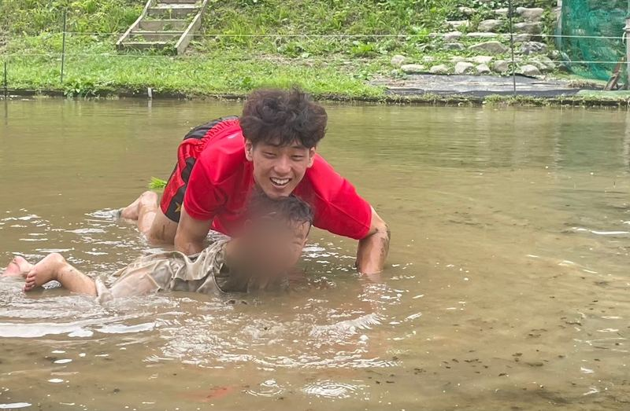
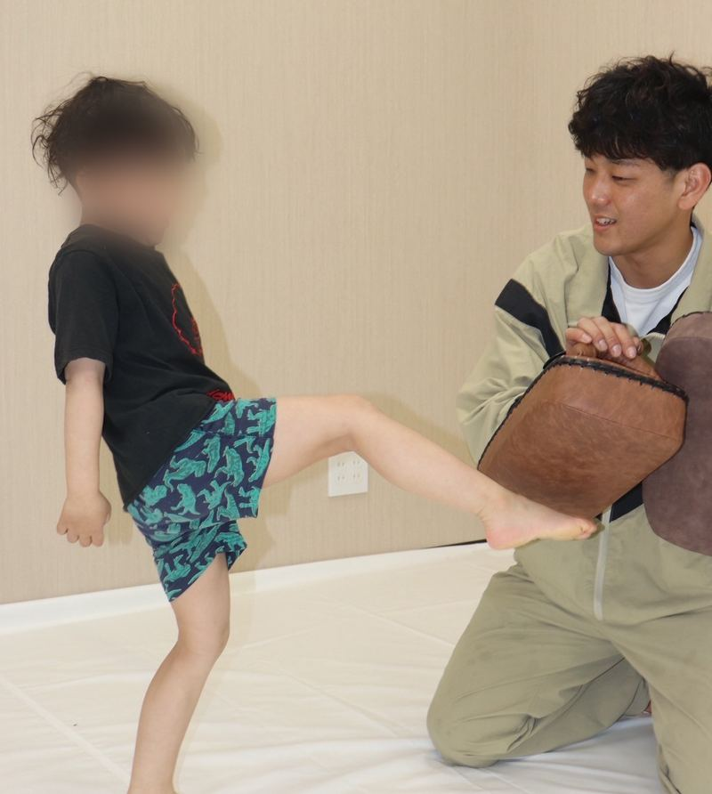
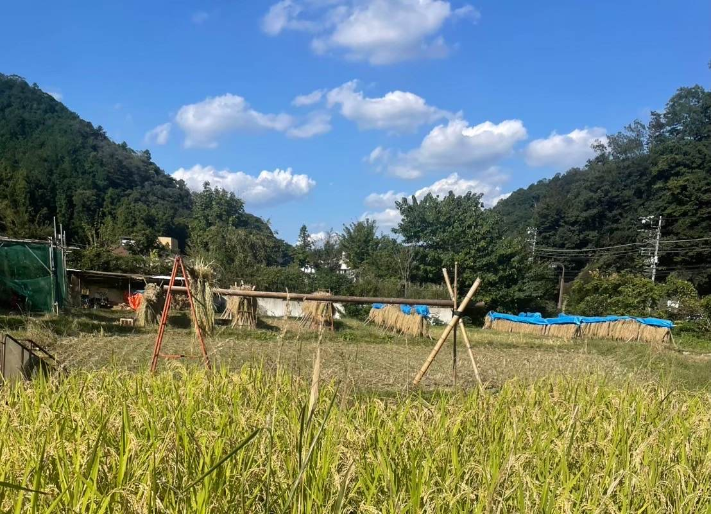
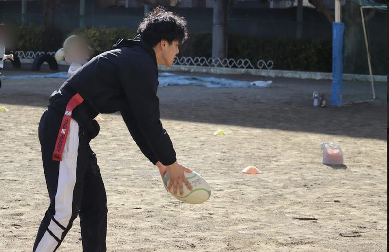
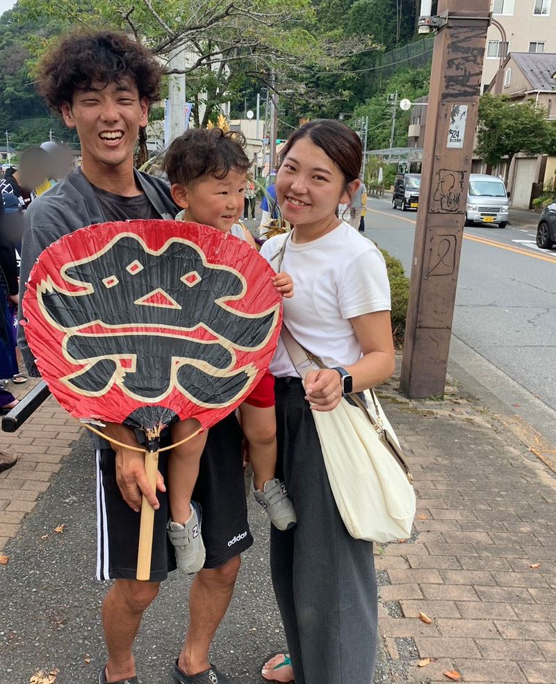
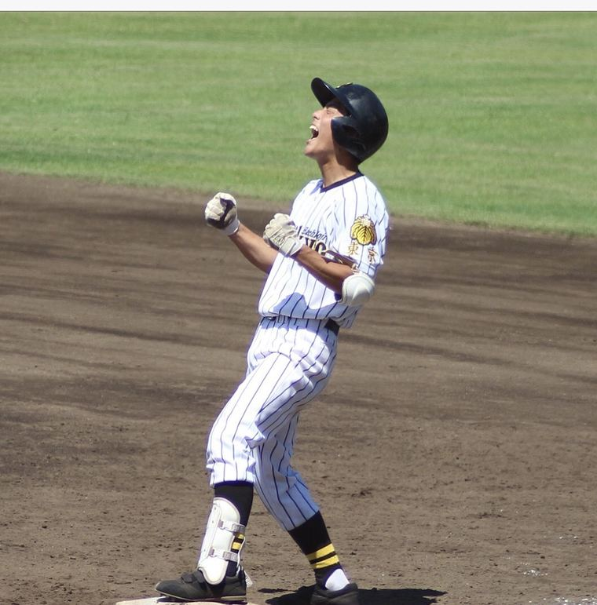
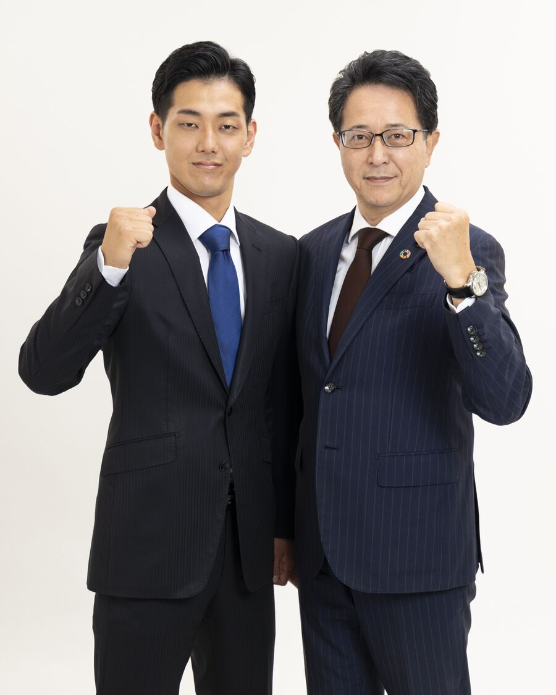

政策1 放課後を、もっと楽しく。もっと豊かに。
預かるだけではない、体験できる放課後へ
- 野球・ダンス・科学・文化芸術など、多彩な体験を地域で提供
- 学童の待機児童ゼロと、居場所の質の向上を進める
- 参加費や用具費の支援で、体験格差をなくす
現場から
スポーツや習い事は、道具代や送り迎えの負担で「始める前」にあきらめてしまうことがあります。野球チームの運営や野球教室、自然体験活動の現場で、その入口の壁を低くしたいと感じてきました。
現場から
教育、子育て、野球、子どもの居場所、地域の安全、そして農業と起業。経歴を並べるためではなく、毎日どこに立っているかを知っていただきたくて、6つの現場をご紹介します。
教育
中学・高校で保健体育を教えています（非常勤講師）。特別支援学校や幼稚園でも、子どもたちと向き合ってきました。教育の現場の変化を、内側から見ています。
子育て
八王子でいま子育て中です。保育や送り迎え、休日の過ごし方。子育て世帯には、お金と同じくらい「時間」が足りないことを、当事者として実感しています。
野球
中学軟式・中学硬式、2つのチームの代表として運営を担い、少年野球大会の主催・運営もしています。地域のスポーツを「続ける側」の大変さと価値を知っています。
子どもの居場所
NPO法人 高尾こてんぐの会で、フリースクールの運営や子どもの自然体験、野球教室に取り組んでいます。学校の外にも、子どもが安心して過ごせる場所が必要です。
地域
八王子市消防団の一員として地域の安全を支えています。市のスポーツ推進委員や部活動指導員として、地域のスポーツにも関わってきました。
農と挑戦
田んぼで米をつくりながら、スポーツトレーナーとして開業し、会社の経営にも携わっています。若い世代が「やってみたい」を形にするときの壁も、面白さも知っています。
「政治家になりたい」から始めたのではありません。
この街で続けてきたことの延長線上に、市政があります。
活動のようす






6つの政策
あれもこれもではなく、自分が毎日立っている現場から語れることに絞りました。子ども、教育、スポーツ、若者、そして世代をつなぐ街づくり。6つの政策です。
預かるだけではない、体験できる放課後へ
現場から
スポーツや習い事は、道具代や送り迎えの負担で「始める前」にあきらめてしまうことがあります。野球チームの運営や野球教室、自然体験活動の現場で、その入口の壁を低くしたいと感じてきました。
地域の子どもは地域で育てる
現場から
八王子市の部活動指導員として、部活動の地域展開（地域移行）の現場に立ってきました。受け皿となる地域の指導者の多くはボランティアです。指導者が安心して続けられる仕組みがなければ、子どもたちの活動の場は守れません。
子育てするなら八王子へ
現場から
二人の子の父として、いちばん足りないと感じるのは「時間」です。調べる・申し込む・送り迎えする時間を減らすことも、立派な子育て支援だと考えています。
大学の街を、若者が残る街へ
現場から
自分自身、スポーツトレーナーとして開業し、会社の経営にも携わっています。小さく始める人が気軽に相談でき、地域とつながれる仕組みがあれば、この街で挑戦する若者はもっと増えるはずです。
行政だけで街をつくらない
現場から
野球チームもNPOの活動も、行政の仕組みだけでは成り立たず、地域の人の「やってみよう」に支えられています。その力を、街づくりの真ん中に置きたいと考えています。
シニアが地域で活躍する街に
現場から
地域のスポーツや子どもの見守りは、多くの先輩世代に支えられています。経験を生かして活躍できる場が、そのまま健康づくりにもつながる。世代をつなぐ街にしたいと考えています。
OUR VISION
私、川上かずきは、
子どもが育つ。スポーツを楽しむ。親の負担が軽くなる。若者が挑戦する。そして、みんなで街を盛り上げる。若い世代が「この街で暮らし続けたい」と思える八王子をつくります。

都政との連携
学童保育、部活動の地域展開、子育て支援。暮らしに身近な課題の多くには、八王子市と東京都の両方の制度や予算が関わっています。八王子選出の都議会議員・両角みのるさんと連携し、現場の声を市政と都政の両方に届けます。
市だけでは解決しにくい課題を、都の制度や予算とつないで考えます。
子育て・教育・スポーツの現場で聞いた声を、都議会にも届けます。
同じ都民ファーストの会の一員として、八王子の課題にともに取り組みます。
東京都議会議員（八王子市選出）両角みのるもろずみ みのる
プロフィール
かわかみ かずき川上 一樹
都民ファーストの会
市政改革委員（八王子担当）
幼稚園から高校まで、すべて八王子
都民ファーストの会 市政改革委員（八王子担当）として、八王子の市政課題に取り組んでいます。
都民ファーストの会 公式サイト（新しいタブで開きます） ↗ご意見募集
子育てのこと、学校や部活動のこと、地域のスポーツのこと、まちのこと。「こうなったらいいのに」という小さな声こそ、政策のヒントになります。いただいたご意見には一つひとつ目を通し、政策づくりと活動に生かします。